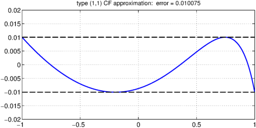
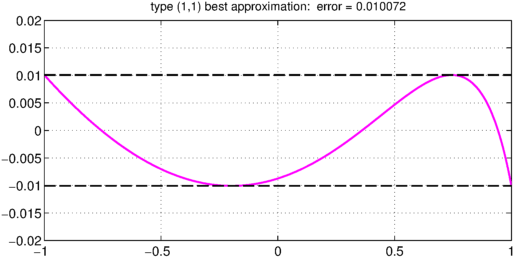
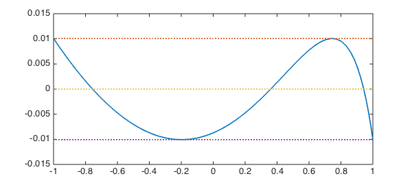

1. The story
In 1986 the first of us published a 4-page proceedings paper called "Matlab programs for CF approximation" [1]. It is possible that this was the first paper ever published that contained MATLAB programs. It presents two programs: CF, for complex polynomial or rational CF approximation on the unit disk, and RCF, for real polynomial or rational CF approximation on the unit interval.
The real example of CF approximation given in [1] is type $(1,1)$ approximation to $(1.2-x)^{1/2}$, for which the result is printed as
$$ r(x) = {1.10417 - 0.77197x \over 1 - 0.27354 x} . $$
In Chebfun, we can perform the calculation like this:
function CF30()
x = chebfun('x');
f = sqrt(1.2-x);
[p,q] = cf(f,1,1);
The coefficients match nicely:
poly(p) poly(q)
ans = -0.771973873637746 1.104173864799875 ans = -0.273544292431606 1.000000000000000
How long does it take? In [1], the computation took "about 40 seconds on an IBM PC/AT". In Chebfun today, here's the timing:
tic, [p,q] = cf(f,1,1); toc
Elapsed time is 0.046339 seconds.
As far as the eye can tell, the error curve equioscillates between 4 extremes:
LW = 'linewidth'; FS = 'fontsize'; errfun = f-p./q; err = norm(errfun,inf); plot(errfun,LW,1.6) grid on, ylim(0.02*[-1 1]), hold on plot([-1 1],err*[+1 +1],'--k',LW,1.6) plot([-1 1],err*[-1 -1],'--k',LW,1.6), hold off title(['type (1,1) CF approximation: error = ' num2str(err)],FS,12)

Let's compare with the best approximation. It takes a bit longer to compute:
tic, [p,q] = remez(f,1,1); toc
Elapsed time is 0.586898 seconds.
Now in principle we have perfect equioscillation, but the error is only very slightly smaller:
errfun = f-p./q; err = norm(errfun,inf); plot(errfun,'m',LW,1.6) grid on, ylim(0.02*[-1 1]), hold on plot([-1 1],err*[+1 +1],'--k',LW,1.6) plot([-1 1],err*[-1 -1],'--k',LW,1.6), hold off title(['type (1,1) best approximation: error = ' num2str(err)],FS,12)

2. Exhuming the code from 1986
Here is the old code from 1986. We've given it a new name, turned it into a function rather than a script, and commented out a pause command, but otherwise this is identical to the code from 30 years ago.
function historicalRCF(Fx,m,n,nfft,K)
% RCF -- REAL RATIONAL CF APPROXIMATION ON THE UNIT INTERVAL
%
% Lloyd N. Trefethen, Dept. of Math., M.I.T., March 1986
% Reference: L.N.T. and M.H. Gutknecht,
% SIAM J. Numer. Anal. 20 (1983), pp. 420-436
%
% Fx(x) - function to be approximated by R(x)=P(x)/Q(x)
% m,n - degree of P,Q
% nfft - number of points in FFT (power of 2)
% K - degree at which Chebyshev series is truncated
% F,P,Q,R - functions evaluated on FFT mesh (Chebyshev points)
% Pc,Qc - Chebyshev coefficients of P and Q
%
% If Fx is even, take (m,n) = ( odd,even).
% If Fx is odd, take (m,n) = (even,even).
%
% CONTROL PARAMETERS
np = n+1; dim = K+n-m; nfft2 = nfft/2;
%
% CHEBYSHEV COEFFICIENTS OF fz
z = exp(2*pi*sqrt(-1)*(0:nfft-1)/nfft);
x = real(z); F = Fx(x); Fc = real(fft(F))/nfft2;
%
% SVD OF HANKEL MATRIX H
H = toeplitz(Fc(1+rem((dim:-1:1)+nfft+m-n, nfft)));
H = triu(H); H = H(:,(dim:-1:1));
[u,s,v] = svd(H);
s = s(np,np); u = u((dim:-1:1),np)'; v = v(:,np)';
%
% DENOMINATOR POLYNOMIAL Q
zr = roots(v); qout = []; for i = 1:dim-1;
if (abs(zr(i))>1) qout = [qout, zr(i)]; end; end;
qc = real(poly(qout)); qc = qc/qc(np); q = polyval(qc,z);
Q = q.*conj(q); Qc = real(fft(Q))/nfft2;
Qc(1) = Qc(1)/2; Q = Q/Qc(1); Qc = Qc(1:np)/Qc(1);
%
% NUMERATOR POLYNOMIAL P
b = fft([u zeros(1,nfft-dim)])./fft([v zeros(1,nfft-dim)]);
Rt = F-real(s*z.^K.*b); Rtc = real(fft(Rt))/nfft2;
gam = real(fft((1)./Q))/nfft2; gam = toeplitz(gam(1:2*m+1));
if m==0 Pc = 2*Rtc(1)/gam;
else Pc = 2*[Rtc(m+1:-1:2) Rtc(1:m+1)]/gam; end;
Pc = Pc(m+1:2*m+1); Pc(1) = Pc(1)/2;
P = real(polyval(Pc(m+1:-1:1),z)); R = P./Q;
%
% RESULTS
plot(x,F-R,'-',x,[s;0;-s]*ones(1, nfft),':'); % pause;
s, err = norm(F-R,'inf'), Pc, Qc
end
It still works!
Fx = @(x) sqrt(1.2-x) tic historicalRCF(Fx,1,1,128,20), toc
Fx =
@(x)sqrt(1.2-x)
s =
0.010070617637528
err =
0.010075111443608
Pc =
1.104173864800379 -0.771973873634149
Qc =
1.000000000000000 -0.273544292430500
Elapsed time is 0.184647 seconds.

end
References
- L. N. Trefethen, "Matlab programs for CF approximation," in C. K. Chui, L. L. Schumaker, and J. D. Ward, eds., Approximation Theory V, Academic Press, 1986, pp. 599-602.